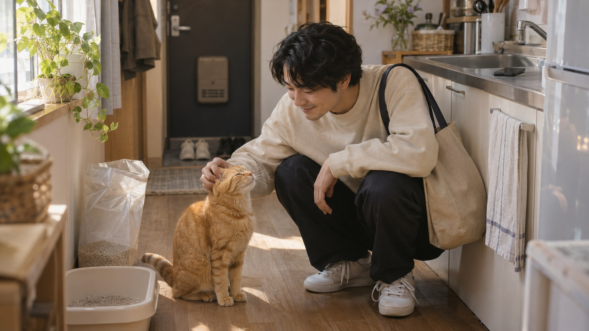
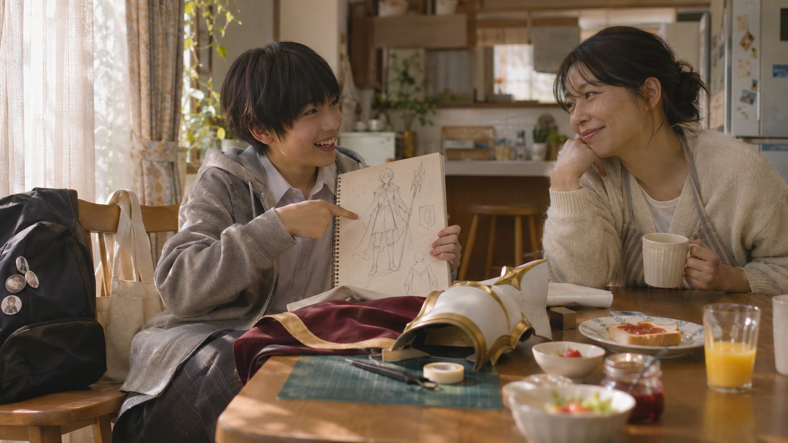
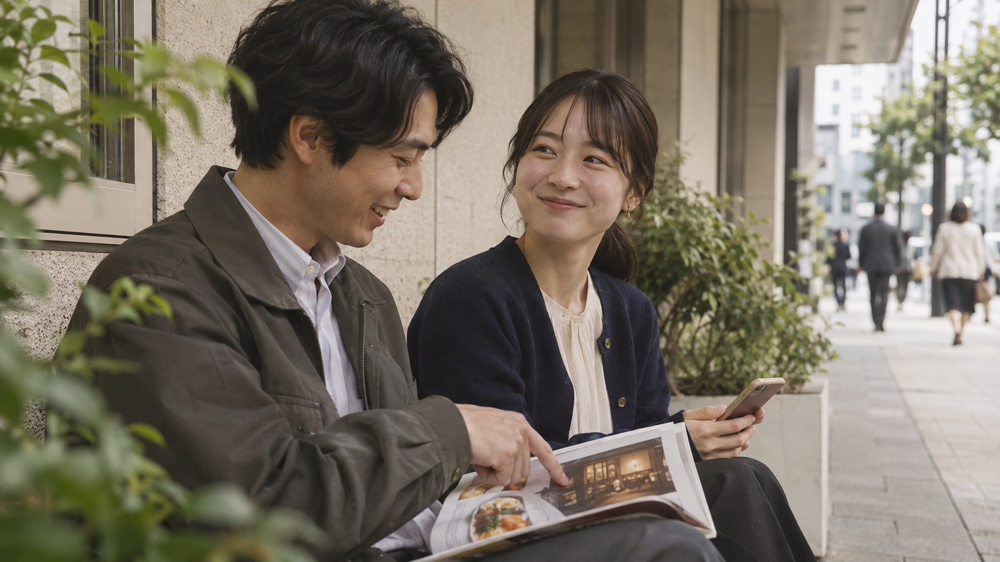
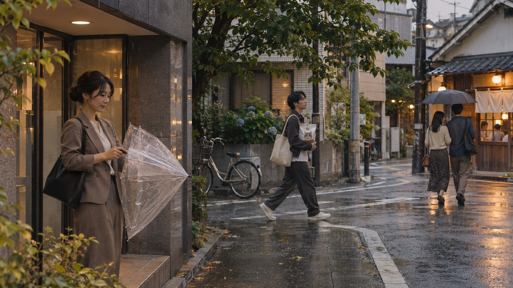

07:40 / 养宠的人｜猫蹭过掌心，他还要赶上早班车。

情绪亲近和一点放心不下；情绪落在出门前多摸一下猫。
产品作用本人交代要补充的猫砂与预算；Iris 整理选项，提交和付款仍逐笔确认。
进入脚本01镜建立缺口，08镜回到同一人物确认选项，11镜回家开门让一天闭环。
 Iris / 群像宣传片方案返回制作报告
Iris / 群像宣传片方案返回制作报告IRIS / SAME DAY, DIFFERENT LIVES / 60 SEC
「また今度」を、今日に。
把总说“下次吧”的事，放进今天。
五组人物的生活在同一天交织：早上交代一件惦记的事，白天去过自己的生活，傍晚回到同一人物。一场雨连接共同时间；Iris 的价值是记得条件、持续接着办、把选择交还本人。
人物图为已保存的 AI 拟拍气氛示意，非实拍、非产品界面；服务执行以实际接入能力为准。

情绪亲近和一点放心不下；情绪落在出门前多摸一下猫。
产品作用本人交代要补充的猫砂与预算；Iris 整理选项，提交和付款仍逐笔确认。
进入脚本01镜建立缺口，08镜回到同一人物确认选项，11镜回家开门让一天闭环。

情绪期待被认真对待；母亲的笑比一句“可以”更轻。
产品作用监护人提供日期、会场与同行条件；Iris 汇总官方信息、准备行程，不替未成年人擅自购票。
进入脚本02镜提出周末愿望，07镜母亲下午短暂休息时核对方案，11镜一起整理背包；愿望在今天被推进。

情绪两个人的小期待；选择由他们共同做。
产品作用沿用已交办的餐厅与时间条件，Iris 盯守并带回空位；名额未保留要写清，本人到官方页确认。
进入脚本03镜先交代想去的店，09镜空位消息回到对话，11镜两人撑伞走向晚餐。
情绪赶时间之后的一口缓气，而非效率狂欢。
产品作用依据本人提供的会议结束时间与预算准备航班方案；规则、价格及是否出票交由服务方与本人确认。
进入脚本04镜委托返程，08镜与养宠用户交叉确认，10镜带上行李离开办公室。
情绪从不确定转为被接住；温度由店员的招呼完成。
产品作用依据用户提供的位置、入住与预算条件整理酒店选项；跳官方渠道确认，服务方完成才出示回执。
进入脚本04镜与机票委托并置，09镜收到可选结果，11镜抵达旅店。

情绪雨声把不同的人放进同一段时间。
产品作用天气提醒是情境设计，需按实际产品能力确认；叙事重点是出门前拿伞，不延伸未经验证的主动监测承诺。
进入脚本06镜开始下雨，10镜拿伞/收伞动作交叉，11镜分别抵达；不是六个独立小故事。
12镜，每镜5秒，0–60秒连续。声音为人物对白与旁白，不宣称产品语音能力。
一つ気になると、また一つ。
惦记一件，又来一件。
声音／衔接：猫铃声接餐具声；从手的动作切到孩子递画。
今度、ここに行きたい。
下次，我想去这里。
声音／衔接：孩子短句；母亲一笑，纸张声接街边杂志翻页。
行きたい場所も。
想去的地方。
声音／衔接：手机输入近景不吞掉人物；同一动作接差旅委托。
今日、済ませたいことも。
今天想安排好的事。
声音／衔接：两个真实生活空间并置；手机只显示必要条件，界面为示意。
頼んだあとは、目の前へ。
交代以后，把心思放回眼前。
声音／衔接：环境声贯穿，进度静静留在主对话，不频繁弹窗。
同じ空の下、それぞれの今日。
同一片天空，各自的今天。
声音／衔接：雨声先入，连接三个地点；用共同天气推进同一天。
帰ったら、一緒に見よう。
回家后，一起看吧。
声音／衔接：对白归母亲；Iris 只整理事项，亲子关系由两人完成。
選ぶのは、あなた。
选择的人，是你。
声音／衔接：两次确认动作做匹配剪辑；查到/待确认状态清楚区分。
いい知らせを、必要なときに。
好消息，在需要的时候。
声音／衔接：提示音只响一次；“未保留”与服务回执不混用。
出かけよう。
出发吧。
声音／衔接：伞开合与雨声形成共同动作；人物肩膀逐渐放松。
「また今度」を、今日に。
把“下次吧”，放进今天。
声音／衔接：真实关系给出回应；温暖归人，不把每件事演成支付成功。
あなたの毎日に、あなたの時間を。もう一人の自分、Iris。
在你的每一天里，留出属于你的时间。另一个自己，Iris。
声音／衔接：音乐收住，品牌最后两秒静止。
五组人物、六组大图；第六组是共同雨景。养宠人、母子、情侣、出差者与旅人分别在早上交代条件，白天忙自己的事，傍晚收到信息或选项并由本人决定。雨声与伞的动作连接同一天，不表示产品主动监测天气。
核心主张：「また今度」を、今日に。把总说“下次吧”的事，放进今天。
品牌定位：持续懂你、替你办事的“另一个自己”。真实生活信息为根、办事能力为骨架、情绪互通为灵魂。面向不同生活处境的个人，不把家庭责任或出行方式固定给某类人。
影片规格：60秒，16:9，12镜，每镜5秒。日语人物对白与旁白，中文对照。Iris不出声，所有输入、回复、条件、状态与回执都是屏幕文字，不朗读。
本页为当前群像方案。现有六张AI拟拍气氛图不是实拍、真实产品界面或最终成片；人物选角、场地、官方界面、录音与成片需按当前方案制作，不沿用历史单人方案的素材复用估算。
以下日语输入、界面文字、预算、人数和时刻均为虚构制作示意，不是报价或特定功能已上线的承诺。实际服务名称、条件、规则与完成记录，以获准使用的真实资料为准。
いつもの猫砂を、3,000円以内で。
输入：平时用的猫砂，3,000日元以内。本人提供规格、数量与收货条件，实际金额、运费和配送时间在服务方页面核对。
进行中：進行中｜猫砂の候補を確認中。结果：確認できました｜商品・合計・配達予定。
本人确认：公式ページを開く → 注文内容を確認 → 注文を確定する。提交和付款由本人完成。
完成依据：服务方返回「ご注文を受け付けました」与订单号后才标「確定」；只提交但未受理则保留「申請済み」。11镜回家见猫，不表示猫砂已经送达。
对应镜头：01提出需求，05持续任务，08本人选择，11生活回应。
日曜のイベント、子どもと二人で。
输入：周日的活动，我和孩子两个人去。监护人提供活动官方链接、日期、会场与同行人数；年龄限制、入场规则与交通信息依据官方资料。
进行中：進行中｜公式案内と行き方を確認中。结果：確認できました｜開催日・会場・入場条件。
本人确认：公式案内を開く → 日程と条件を確認する，由监护人核对。
完成依据：本片只到官方信息整理完成，不显示购票成功；后续购票需监护人确认付款并取得服务方票务记录。16:30为下午短暂休息。
对应镜头：02提出愿望，05各自白天，07核对信息，11亲子整理背包。
このお店、今日19時以降、二人で。
输入：这家店，今天19点以后，两个人。本人指定店铺、日期和时段；菜单、费用和取消规则按真实服务核对。
进行中：進行中｜指定のお店の空きを確認中。结果：確認できました｜本日19:00・2名／まだ確保していません。
本人确认：予約ページを開く → 予約内容を確認 → 予約を確定する，由本人在官方页面操作。
完成依据：服务方返回「ご予約が完了しました」与预约号后才标「確定」。查到空位不等于保留或订好；未取得完成证据时，结尾改拍两人商量选择，不演成预约已完成。
对应镜头：03交代条件，06共同雨景，09查到并确认，11赴约或继续选择。
会議のあと、東京に戻れる便を。
输入：会议以后，能回东京的航班。本人补充出发机场、会议结束时间和预算；预算示例30,000日元，实际价格、行李与改退规则以服务方为准。
进行中：進行中｜条件に合う便を確認中。结果：確認できました｜便・時刻・料金・規則。
本人确认：航空会社のページを開く → 便と規則を確認 → 購入を確定する。付款与出票由本人按官方流程确认。
完成依据：取得航空公司完成记录与订单号后才标「確定」；只比较方案仍为「確認できました」，需登录、付款或补充资料则为「対応が必要」。离开办公室不是出票证据。
对应镜头：04交代返程条件，08比较方案，10带行李离开。
今夜泊まれる宿を、この近くで。
输入：这附近，今晚能住的地方。本人提供位置、入住日期和人数；预算示例12,000日元，实际税费、入住时间和取消规则以服务方为准。
进行中：進行中｜今夜の宿泊候補を確認中。结果：確認できました｜場所・料金・チェックイン条件。
本人确认：公式予約ページを開く → 宿泊内容を確認 → 予約を確定する，由本人完成。
完成依据：服务方返回「ご予約が完了しました」与预订号后才标「確定」。未获得记录时保留「対応が必要」，结尾不呈现已经订妥入住。
对应镜头：04交代条件，06看雨，09查看并确认，10收伞，11获得接待。
「確認できました」是已查到，须附条件和来源，不等于完成。「申請済み」是已提交，仍等服务方受理。「確定」须有服务方订单号、预约号或完成页面。「対応が必要」说明还需本人登录、选择或付款，并提供官方入口。
01–04镜的店铺、日期、预算、位置与偏好由各人提供。五组人物账号与资料独立，交叉剪辑不表示跨用户共享个人信息。
04–05镜保留进行中状态，07–09镜返回官方资料或选项。本人去忙自己的事，Iris只在已授权条件内继续核对；到期限仍无结果时如实说明，不把等待演成成功。
07镜监护人核对活动；08镜本人比较商品与航班；09镜本人在官方页面确认餐厅和酒店。做不到的步骤交还本人；任何付款、购票与最终预约都不擅自代为确认。
01–02镜的手与表情、07镜母亲的回应、11镜开门见猫和抵达店铺的动作表现温度。产品帮助整理和跟进，亲子、情侣、人与宠物的关系仍由本人完成。
片中呈现本次交办条件被持续带入。长期记忆属于任务收尾后的产品说明：写入前询问，保留来源，可查看、修改和删除，不为此新增片内镜头。
本片表达省事和更好的生活体验，不虚构节省金额或收益数字。五项服务为品牌愿景示例，实际接入范围和执行方式以产品确认能力为准；文字交互不表示产品语音，雨景不表示天气主动监测。片尾保留「※画面はイメージです。」。
日本本土化：短日语请求由母语者审校；孩子、监护人、情侣和服务人员的语气分别处理。实际活动规则、餐厅预约、机票和酒店条件以官方资料核对。
真实细节：每组人物保持同一身份、服装、手机和物件；餐厅店名、活动日期、行李和雨伞在对应镜头连续。孩子草图使用获准原创图，不借用现成商业角色。
时间连续：07:40交代生活需求，09:10交代差旅，16:20下雨，16:30母亲核对，17:40本人选择，18:10官方确认，18:30出发，19:00生活回应。天气与光线按拍摄地点核对。
录音：Iris不出声。人物对白、旁白和环境声分轨；屏幕信息不朗读。每句入点在所属5秒镜头内调整，片尾最后两秒画面静止。
材料状态：本页和两份配套文字稿使用同一群像12镜。方案与AI气氛图不等于成片；选角、场地、获准界面、真实回执、母语审校和最终录制按制作周期完成。